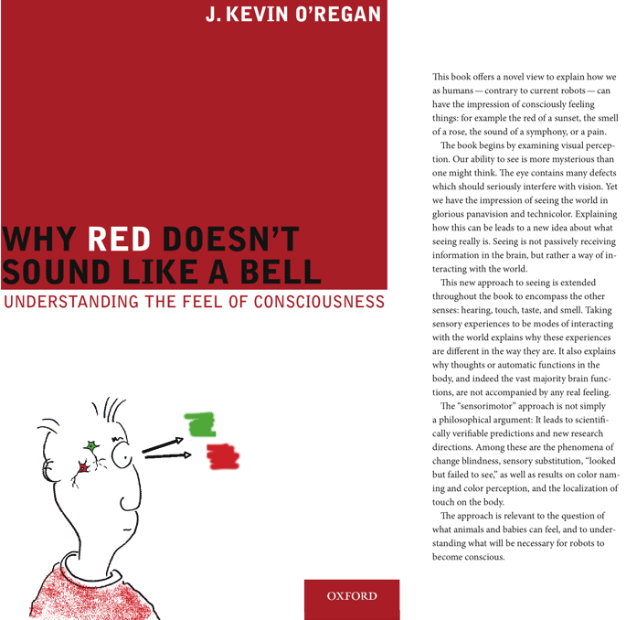
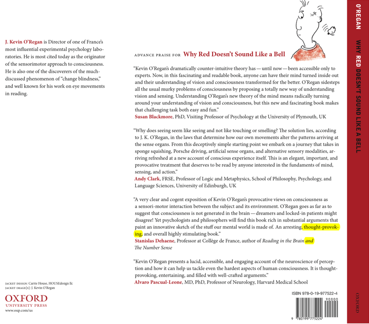

My book on Consciousness was
published with Oxford
University Press (NY) on June 17th, 2011.
Here are front and back cover and cover flaps, and table of
contents:

CONTENTS
Preface
PART 1: THE FEEL OF SEEING
1. The catastrophe of the eye
2. A new view of seeing
3. Applying the new view of seeing
4. The illusion of seeing everything
5. Some contentious points
PART 2: THE FEEL OF CONSCIOUSNESS
6. Towards consciousness
7. Types of consciousness
8. Phenomenal consciousness, raw feel, and why they're hard
9. Squeeze a sponge, drive a Porsche: a sensorimotor account of
feel
10. Consciously experiencing a feel
11. The sensorimotor approach to color
12. Sensory substitution
13. The localization of touch
14. The phenomenality plot
15. Consciousness

updated Nov 1, 2024